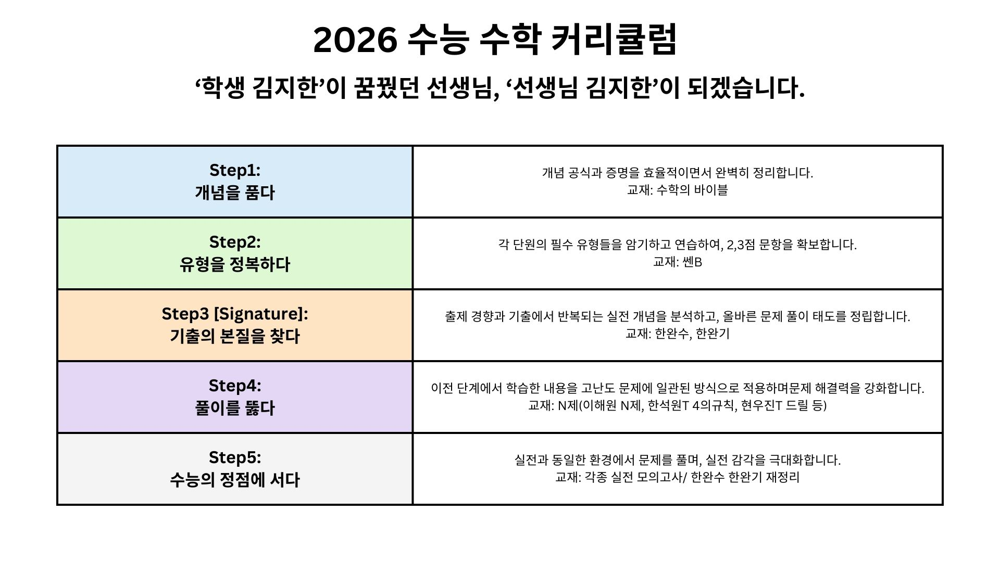

🔹 효율적이고 명확한 개념 학습
캐나다에서 유학 후 5개월 만에 중등 수학부터 수1,수2까지 수학의 바이블(기초 개념서)로만 공부하여 2021수능 수학1,수학2 전문항 정답을 달성한 경험이 있습니다. 핵심 개념과 증명을 선별하여 강약 조절한, 효과적인 개념 수업을 제공합니다.
🔹 수능이 원하는 문제 풀이
문제 발문에서 필요한 개념과 행동 방향성을 읽어내어, 가장 효율적인 풀이법을 제시합니다.
🔹 학생의 입장에서 생각하는 선생님
공부 방향, 수험 생활의 외로움, 즉각적인 질문 해결까지 추가 제공 서비스를 통하여 학생의 고민을 함께 해결합니다.
수업 대상
🎯 고2, 고3 및 N수생: 수학 노베이스부터 2등급까지
🎯 수학1, 수학2, 미적분
수업 방식
🔸 일반 수업:
학생의 수준에 맞춰 단계별로 진행하며, 개념 학습부터 문제 풀이까지 체계적으로 지도합니다.

🔸 피드백 수업:
학원/인강에서 배운 내용을 기반으로, 학습 성취도를 점검하고 질문 해결을 돕습니다.
✅ 학습 방향 점검: 학생의 주간 학습 계획과 성취도를 확인하고 부족한 부분을 점검.
✅ 질문 해결: 학원/인강에서 이해되지 않은 개념이나 문제를 함께 해결.
✅ 개념 출력 훈련: 학생이 배운 내용을 직접 설명하도록 하여 오개념을 교정.
✅ 보완 학습 제안: 부족한 개념이나 문제 유형에 대해 재수강 추천 또는 보충 설명 제공.
🔸 맞춤형 수업:
학생과 학부모의 요청에 따라 유연하게 수업 방식을 조율합니다.
🔸 지역:
부산광역시 강서구 대면 수업, 그 외 지역은 화상 수업으로 진행합니다.
영어 & 물리 피드백 수업
🔹 영어 피드백: 캐나다 유학 당시 현지 학교에서 상위 10%만 받을 수 있는 영어 A등급을 받았고, 2024 수능 영어에서는 듣기에서 2문제를 틀려서 2등급을 받았습니다. 인강 질문 해결 및 방향성 점검을 진행합니다.
🔹 물리 피드백: 2024 수능 물리1에서 1문제를 틀려 1등급을 받았습니다. 인강 질문 해결 및 방향성 점검을 진행합니다.
※ 단독 수업은 진행하지 않으며, 수학 수업과 병행 가능합니다.
추가 제공 서비스
🗓 플래너 및 학습 루틴 관리: 매일 저녁 스터디 플래너 점검
💬 빠른 질문 응답: 12시간 내 답변
📅 일요일 Study With Me (09시~18시)
• 함께 공부하는 러닝 메이트로서 오프라인 및 Zoom으로 일요일에는 학생들과 함께 공부합니다.
• 질문 및 상담 가능합니다. (추가 비용 없음)
• 불가피한 사정 시 사전 공지 예정.